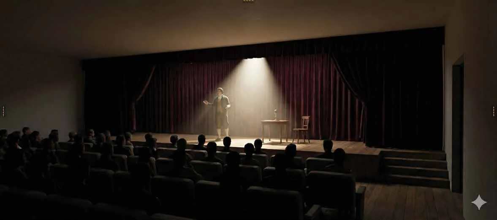
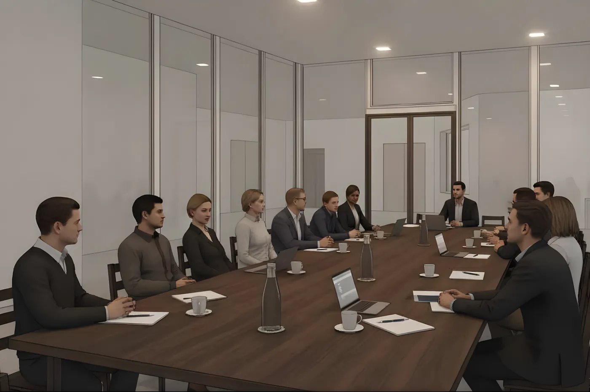
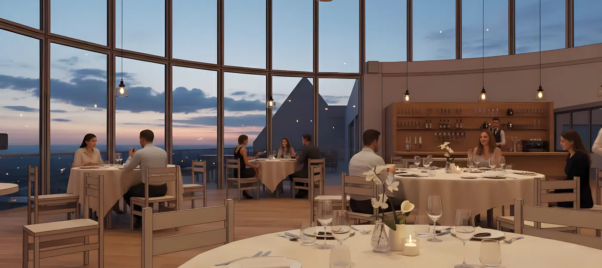
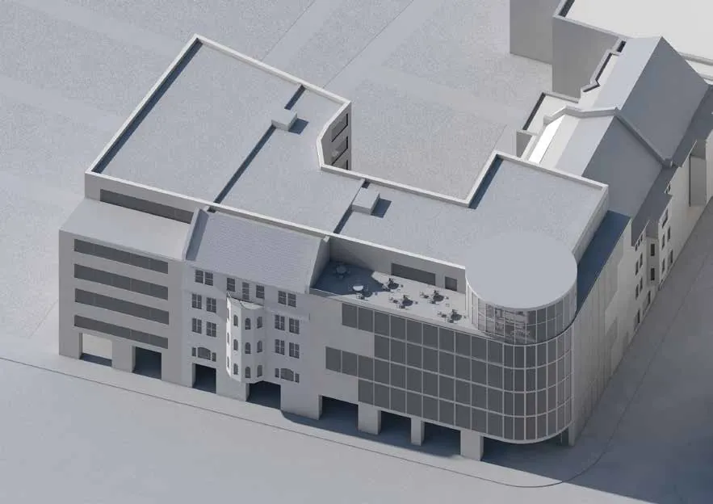
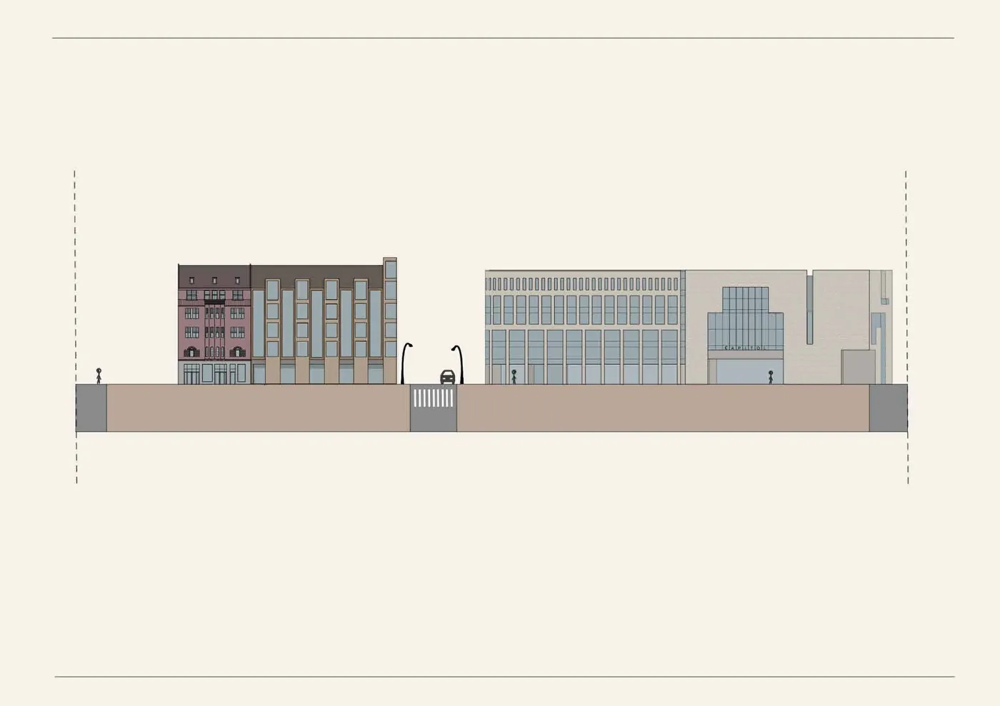

01/ 15
Kultura · Wrocław, ul. Piłsudskiego · 2025
Centrum Sztuki i Sceny
Współczesne dopełnienie pierzei ulicy Piłsudskiego — miejski „hub” dla ludzi pracy, kultury i podróży.

Projekt tworzy spójne, współczesne dopełnienie pierzei ulicy Piłsudskiego we Wrocławiu: architekturę wysokiej jakości, z otwartym i aktywnym parterem oraz funkcjami odpowiadającymi charakterowi śródmieścia.
Nowy budynek staje się łącznikiem między funkcjami kulturalnymi skupionymi wokół Teatru Capitol a strefą biznesowo‑hotelową przy dworcu. Program obejmuje salę widowiskową, foyer, sale konferencyjne oraz restaurację z widokiem na miasto, a przeszklony, zaokrąglony narożnik otwiera bryłę na skrzyżowanie.
Łącznik między kulturą, pracą i podróżą.






—
Plansze
Plansze projektowe w pełnej rozdzielczości — kliknij, aby powiększyć.